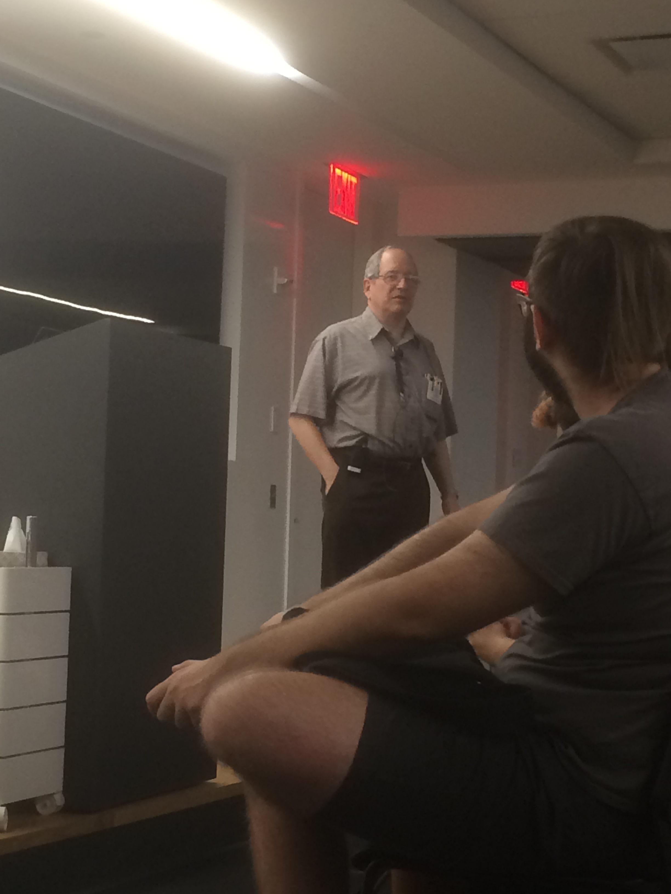

Week 3 at RC
On Monday and Tuesday I worked on my C project. I was able to send one message from an actor in one machine to another one in another machine through a socket. It was mostly a simple process. What I want to do now is send multiple messages on the same connection and that’s why I was looking into COBS. I have written some tests for the encoding and decoding side but it needs more work. Also I wanted to organize better my build process and Satabdi helped me out with that. I feel like I’m advancing very slowly on this project.
Also on Monday I attended Gerald J. Sussman’s talk on Flexible Systems (this is a longer version of the talk). Sussman is one of the authors of SICP which is the first book from which I learnt the very first notions of Functional Programming, even though the book is more general than that. It was very cool to see him and hear him in person. I didn’t ask him anything, though. I couldn’t think of any non-stupid thing to say. Some memorable quotes:
“A diamond is very pretty. But it is very hard to add to a diamond. A ball of mud is not pretty. But you can always add more mud to a ball of mud.”
“I want to enhance the lifes of people who are having fun programming, not because it’s a job they do, (but) because they want to think, and they want to learn by writing programs that help them think.”
“Any Lisp is better than none!”

On Tuesday I attended the weekly code dojo and solved this problem with Vaibhav using Haskell. Our code was very slow but afterwards Vaibhav was able to make it more efficient. Here’s the final version. It’s been a long time since I solved this kind of problem. This got me thinking about the fact that this solution may generalize for pair of numbers that are relatively prime. I swear I saw this kind of problem during some discrete math course I took, with the caveat that the solution may contain negative numbers.
On Wednesday and Thursday I worked on my Raft implementation. I started to write a lot of code but I’m not sure if some parts of it are correct. I think the leader election part is the easiest one. The complex one is the part that concerns log replication. I’ve been re-reading the paper and watching this animation multiple times because there are some fine-grained details that I don’t understand yet. I also found this blog post from a TA at MIT with advice for students trying to do the same thing. My strategy so far has been to hold the state of each node in an actor (looks like it’s been my favorite concurrency abstraction so far). The advantage of doing this is that it’s an abstraction that’s naturally distributable so my local tests will reflect, up to some point, what may happen in a distributed environment. Nevertheless I plan to do some kind of “real distributed tests” whatever that may mean. But for now I just want to iterate quickly.
On Thursday there were some presentations. My favorites were:
- Totes random by Sean, Taylor and John: a random number generator that uses Twitter as a source of entropy.
- 3d soundscape by Emily: It’s a procedurally generated 3D landscape using audio data as input. You can see a video of it here. I like the idea of using code to create art, and not just doing something that, in corporate slang, “generates value”. I wish I were that creative and had the technical skill to do something like that.
- Continued fractions by Harold: This blog post is somewhat to similar to the talk (the “live” version was very cool, I don’t think anyone would understand why I liked the presentation from reading the blog). I then realized that Harold is the same author of this same blog post that I read (and really liked) before coming to RC.
Friday was the day of Rust:
- I watched 2 lecture videos of the Rust OS Class and I completed the first programming assignment.
- I finished the Booting up chapter of IntermezzOS.
- I wrote very little code of my Rust IRC server.
And in other news: I’ve been attending a daily guided meditation group. Ten years ago Miguel would have laughed at the idea. I’ve been reading about that mindfulness thing and it sounds interesting. Also I started to read again “Gödel, Escher, Bach” during my commute (in spanish, I don’t think I’d be able to ingest that much abstraction in english). Hopefully this time I will be able to finish it.